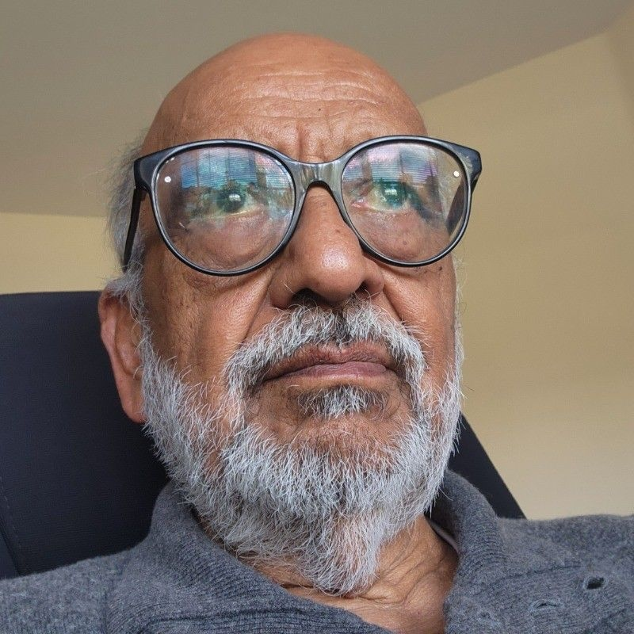

01
Drives Gujarat's flagship startup ecosystem across 104 universities as CEO of i-Hub Gujarat, nurturing the entrepreneurial spirit of the state's youth and forging strategic partnerships with industry and government. As Founding Director of GTU Innovation Council, he contributed over a decade to building one of India's most cohesive academic innovation ecosystems. His work spans sectoral and regional innovation development, positioning Gujarat — and India — as globally competitive startup destinations.

A rare leader who has excelled at the highest level in both industry and academia. As MD & CEO of Thermax, he globalised the engineering conglomerate multifold through innovation and strategic acquisitions. He now heads the IITB-Monash Research Academy — a unique collaboration between IIT Bombay and Monash University, Australia. An active partner in government policy bodies, he champions technology development, gender equality, and sustainable industrial growth at the national level.
Chairman & Managing Director of Sarda Energy & Minerals Ltd., a publicly listed diversified industrial group with integrated operations in steel, power, ferro alloys, and mining across Central India. With decades of leadership steering a large-scale enterprise through capital markets and regulatory landscapes, Mr. Sarda brings deep governance expertise and an industrialist's perspective to V3F — advising on institutional credibility, corporate partnerships, and building durable long-term value.

One of India's foremost materials scientists and academic leaders, Prof. Murty serves simultaneously as Director of IIT Hyderabad, Director of IIITDM Kurnool, and President of the Indian Institute of Metals. A pioneer in nano-materials and high-entropy alloys research, he brings unparalleled depth in translating frontier science into technology. He guides V3F on deep-tech incubation strategy, research commercialisation pathways, and alignment with national science & technology funding programs including DST and SERB.

A global corporate executive with 30+ years in manufacturing and international sales. Co-founded Virgo Valves & Controls Ltd., which he scaled into a world-class manufacturer supplying ball and triple-offset valves to Oil & Gas projects globally — leading to its landmark $400 million acquisition by Emerson Electric (NYSE: EMR) in 2014. He subsequently served as President of Emerson's Isolation Valves Division. Now a venture capitalist investing across diverse industries and geographies, Mr. Desai advises V3F on international growth strategy, fundraising, and cross-border deal-making.

06
A 50-year pioneer in AI, computer vision, and multimedia computing, Prof. Jain founded the AI Lab at the University of Michigan and established multimedia computing as a recognised discipline. His students went on to create Photoshop, the iPod, and the iPhone. A serial entrepreneur and holder of fellowships in ACM, IEEE, AAAI, AAAS, IAPR, and SPIE, he now builds multimodal AI systems for healthcare at billion-person scale — inverting the conventional model by making daily lifestyle the primary driver of health. He advises V3F on frontier technology strategy, AI-driven ventures, and building globally impactful startups.
Role of Advisors
Advisory Board members guide V3F as an institution — shaping policy, governance frameworks, government grant applications, and strategic ecosystem partnerships. They meet periodically with V3F leadership and provide high-level strategic direction.
Role of Mentors
Mentors work directly and hands-on with incubated startups — matched by sector and stage — providing structured guidance on product, market, fundraising, legal, and operational matters on an ongoing basis.
Meet all Mentors arrow_forwardReady to Build with V3F Nagpur?
Apply for incubation and gain access to world-class research infrastructure, a powerful mentor network, and an advisory board shaping India's innovation future.